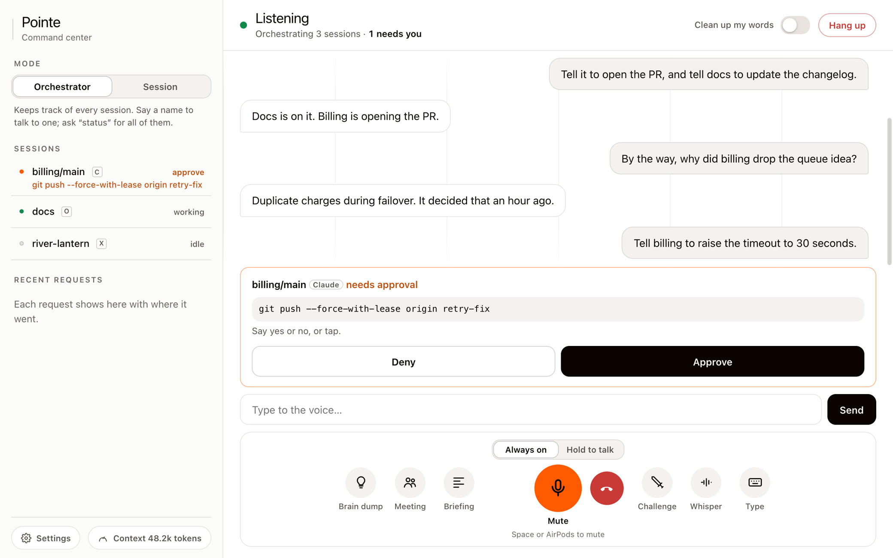
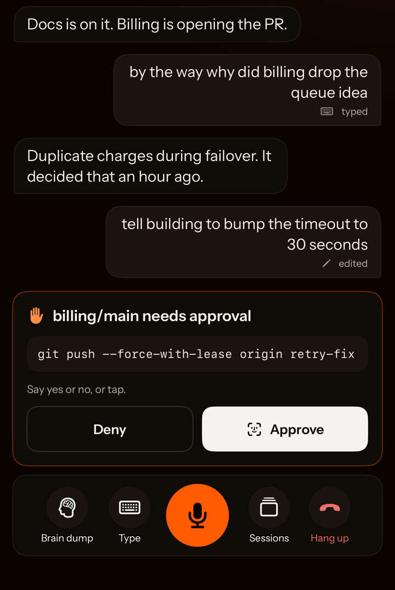
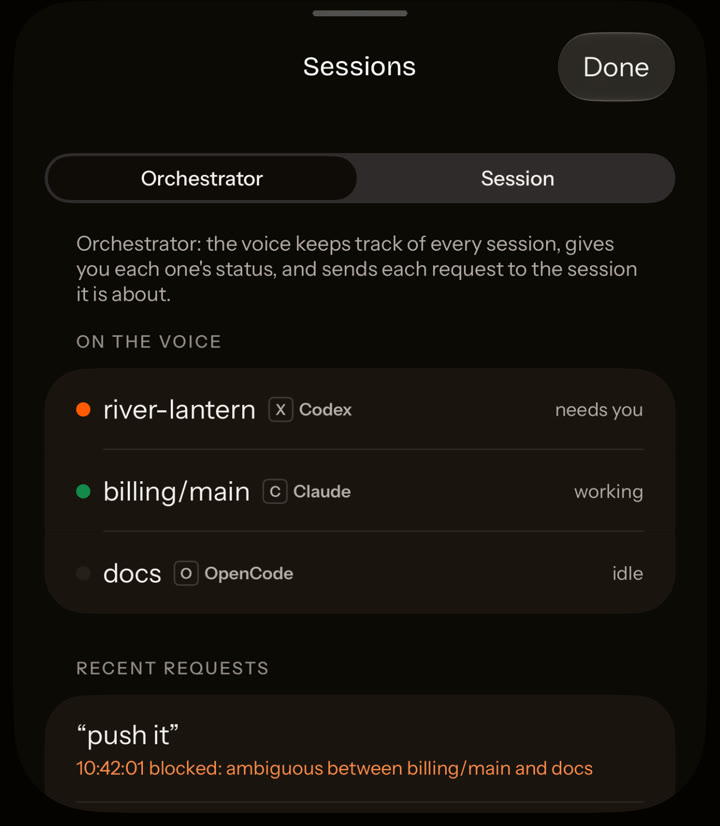
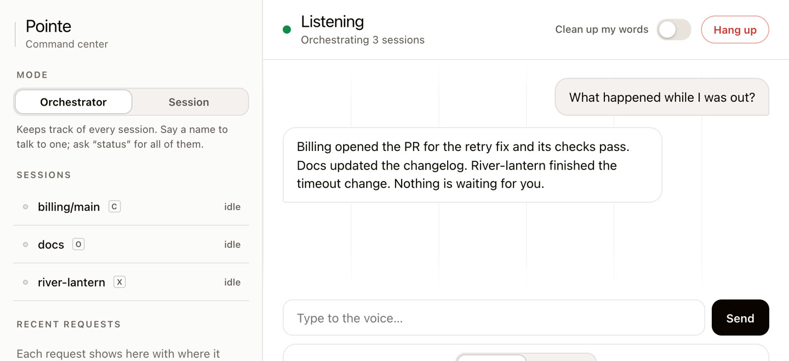

MIT · runs on your Mac · open source from Ballerine Engineering
Stop typing to one agent.
Talk to all of them.
Pointe is one voice over every Claude Code, OpenCode and Codex session you join to it. Ask what each one did. Send work to one by name. Approve a permission prompt by saying yes, or by a tap when the command cannot be read out.
Runs on your Mac. No server, no account. Your own model keys, or local models.
claude plugin marketplace add https://github.com/ballerine-io/pointe.git && claude plugin install pointe@pointeThen /pointe:setup in a new Claude Code session, and /pointe:voice in each session
you want to reach. Three steps.


billing/main waits for a yes, a no or a tap on
the exact command. Screenshots of the product; the sessions and the words are invented.- Cost
- About $1 for a busy hour (60 replies) on your own keys, by arithmetic. Free on one Gemini key's free tier. $0 fully local.
- Models
- You set each role. Defaults: Claude Sonnet 5.5 thinks, Soniox hears, ElevenLabs speaks. Or Gemini or OpenAI alone, or Whisper, Kokoro and Gemma on the Mac.
- Needs
- macOS, Claude Code 2.1.224 or newer, Chrome, headphones, one model key. English and Hebrew are benchmarked.
- License
- MIT. Version 1.14.6.
The sessions do the work. Pointe listens, reports and routes.
With text, you prompt one session at a time and read each reply. Here you hold one conversation and the sessions report into it.
Each session keeps its own context and keeps working. Pointe reads their records and reports. A background session speaks up for two things only: it finished, or it needs approval. A "by the way" question goes to a read-only copy, so the live session gets no new message.
- You
- What is the billing session doing?
- Pointe
- It finished the retry fix. Tests pass. It asks whether to open the PR.
- You
- Tell it to open the PR. An answer relayed to the session. It approves no permission prompt: those follow the rules below.
- Pointe
- Sent to billing.
- You
- And tell the docs session to update the changelog.
- Pointe
- Docs is on it.
- You
- By the way, why did billing drop the queue idea?
- Pointe
- Duplicate charges during failover. It decided that an hour ago.
How it works
A daemon on your Mac, between your voice and your sessions.
A Python daemon built on Pipecat runs the call. Each session you join gets an adapter. It reads the session's transcript, sends your requests in, and holds its permission prompts.
You
- Chrome page on the MacLoopback only. Transcript, pending requests, Approve and Deny.
- iPhone appPaired once by QR code, pinned TLS certificate. Approve needs Face ID.
one WebSocket per call: audio both ways, status, taps
The daemon on your Mac
Ears→Echo guard→Brain→Mouth
Speech to text, the bot's own voice dropped, an LLM that acts only through tools, text to speech. Speech is a tool call, checked in code before it is said.
ApprovalsWhich commands may be read out, what counts as a yes, the tap, the optional voice lock.
GateA model checks each send against what you just said. It lowers injection risk; it does not remove it.
ReaderSession notes, reports, briefings, conflict checks, meeting notes.
one adapter per session: read its record, send to it, hold its prompts
Your sessions
- Claude CodeJoined with
/pointe:voice. - OpenCodeVersion 2.
pointe join opencode. - Codex CLIStarted with
--remote.pointe join codex. - Other machinesA node on another Mac or Linux host: no audio, no keys.
Each role (ears, brain, reader, gate, mouth) is set separately: a vendor you chose, under
your key, or a model on your Mac. The gate's config name is checker.
Detail: how-it-works.md.
In a call.
- One voice over many sessionsSay a session's name to talk to it or switch to it. Ask what is going on across all of them.
- Session notesA reader model keeps notes per session: goal, state, decisions, what was ruled out, what is open. It turns each final message into a short spoken report.
- Side questions"By the way" goes to a read-only copy of the session. The live one keeps working.
- Several harnesses and machinesClaude Code, OpenCode and Codex in one call, each session with its own approvals, on this Mac or on others.
More, each with its rules, what was measured, and its limits
- Brain dumptalk first, send a prompt after
- Audio briefings"brief me on the night"
- Voice lockonly your voice counts
- Push to talkno audio unless you hold
- Vocabularyfix a misheard name once
- Meeting modenotes and lookups, no sends
- Conflict alarmtwo sessions disagree
- Show while it saysthe diff on screen
- Watch and desktop alertsa session needs you
- All features14 pages

Approvals
What a spoken yes can approve, and what it cannot.
Words you speak can make a session do work, so the rules are in code with tests, not in a prompt.
| What happens | Result |
|---|---|
You say yes, and all of these hold:
| Approves |
You tap Approve on the exact request, on the page or in the iPhone app (Face ID). A request the
daemon cannot read out whole (unknown programs or flags, $, globs, subshells, several lines,
sudo, more than 25 words) is approved only this way. | Approves |
| You answer in the terminal, as always: your Claude Code deny rules still apply. Or a notification's Approve, only if you turned it on, and only for a request that could be read out. | Approves |
| "Okay, tell me more", "yes, and run the linter", silence, or a yes to any other question. An echo of Pointe's own voice. Words typed in the call or as a correction. A voice match by itself. Any mode: drive, whisper, meeting, briefing and challenge can only narrow what a word may do. | Nothing |
The request holds a credential-like value: a key, a token or password=. Detection is by
pattern, so it can miss one. | Not read out. Masked on screen, waits for a tap |
| Anyone says no, in every mode. | Denies |
| Another person in the room, a video or a podcast says yes right after a read-out. Voice is not authentication. The voice lock narrows a yes to your voice; it is off by default, and a recording of your voice can pass it. Do not use voice approvals in a room you do not trust. | Approves, with the voice lock off |
About 13%
of the shell commands in Ballerine Engineering's own Claude Code history can be read out. The rest need a tap or the terminal. That is the design, not a gap.
Two adversarial reviews found 24 ways around earlier versions of the read-out rules; each is now a test in test_security.py. Text-to-speech can mispronounce a command, so the page always shows the exact request.
Set "approvals": "terminal" in ~/.claude-voice/config.json to keep
every prompt in the terminal. The daemon listens on loopback only, every route needs a secret, and
Origin must match Host. The threat model, including what Pointe does not defend
against: SECURITY.md.
What leaves your Mac, and where it goes.
Pointe has no server and no telemetry, and the call page loads nothing from outside your Mac. What leaves the Mac goes to the vendors you chose, under your own keys. Ballerine runs no server for Pointe and receives none of this traffic.
| What | Goes to |
|---|---|
| Your speech while the microphone is open, plus hints: your dictionary, session and folder names, names from session notes | The ears vendor: Soniox, Google Gemini, OpenAI or ElevenLabs |
| Session content: transcripts, notes, reports, briefings, conflict checks. This can include your code. | The brain and reader vendors: Anthropic, Google Gemini or OpenAI |
| What the bot says, which can quote session content | The mouth vendor: ElevenLabs, Google Gemini, Soniox or OpenAI |
| What you said, each session's latest lines, goal, folder path and up to 40 file names | The vendor you set for the gate: Google Gemini, Anthropic or OpenAI |
| In a meeting you started: the room's audio, and transcript windows | Soniox, and the reader vendor |
pointe local voice: no audio leaves
Whisper hears and Kokoro speaks on the Mac. Your words reach the brain, reader and gate vendors as text. Meeting mode is off.
pointe local: nothing leaves
Whisper, Kokoro and Gemma 4 26B on the Mac, and no key is read. Needs Apple silicon, 32 GB of memory and about 19 GB of disk. Slower and less accurate, by measure: the brain passed 76.9% of 78 cases against 91.9% for Sonnet. local.md
Always on the Mac
Your voiceprint, the call journal, session notes, the dictionary and briefings, as files in your home folder. Keys come from the environment or the macOS Keychain and reach the daemon only. With push to talk on, no audio leaves unless you hold the talk control.
Full list: SECURITY.md and PRIVACY.md. This page has no analytics and loads nothing from other hosts.
Use and evidence
What it is for, and what we can show.
Three kinds of numbers, kept apart: measured in Pointe, published research that is not about Pointe, and one engineer's own use. Where we have no number, we say so.
| When | What you do | Uses |
|---|---|---|
| Several long-running sessions | "What is everyone doing?" One answer, and you hear when one finishes or needs you. | Session notes, background announcements |
| Away from the desk | The call moves to the phone. A request is read out, or waits for your tap with Face ID. | iPhone app, approvals |
| Before a session starts work | Talk through the task for a few minutes. Pointe turns it into a prompt in your words and sends it when you say. | Brain dump |
| A question, mid-task | "By the way, why did billing drop the queue idea?" The session is not interrupted. | Side questions on a read-only copy |
| Start of the day | "Brief me on the night": what each session did, what failed, what waits on you. | Audio briefings |
| In a meeting | Notes, and a lookup in a session when a question comes up. Nothing is sent to a session. | Meeting mode |
| Hebrew and English in one sentence | Speak as you do. Session and library names are heard through your dictionary. | Vocabulary, Soniox ears |
Measured in Pointe
2.11 s
last word to first sound, median
p90 2.50 s. 24 turns, live vendors, a synthesized speaker, Soniox v6, on 2026-11-20.
13%
of our shell commands can be approved by voice
The rest need a tap. Ballerine Engineering's own Claude Code history.
$1
about, for a busy hour
60 replies and 10 reports on Anthropic, Soniox, ElevenLabs and Gemini keys. Arithmetic from measured use and list prices, not a metered bill. It does not include what your coding agents spend.
3.4 s
median reply, fully local
Against 1.8 s for Sonnet, on an M5 Pro with 64 GB. The local brain passed 76.9% of 78 cases; Sonnet 91.9%.
How the latency was measured, stage by stage
tests/e2e/latency.py asks twelve plain questions on a live call, with a synthesized
voice as the user, and stamps each turn stage by stage. Vendors: Claude Sonnet 5.5 as the brain, Soniox ears,
ElevenLabs mouth. One 18-core Mac that other work kept busy. Run it with your own keys. It calls paid APIs.
The headline is the run on Soniox stt-rt-v6, which Pointe uses since 1.14.5 (the same day, v5 gave 2.02 s and 2.66 s). The stage table is the last full run, on v5 in 1.14.0: 1.86 s median, 2.21 s p90, slowest turn 4.19 s. On v6 the ears stage is 0.47 s median, 0.60 s p90. No end-to-end run after 1.14.6 is recorded yet. The 1.08 s wait before the turn is taken is deliberate: a shorter one cuts people off mid-sentence.
Source: conversation-flow.md §7, benchmarks.md.
| Stage | Median | p90 |
|---|---|---|
| Ears: last word to final transcript | 0.46 | 0.52 |
| The turn is taken, after the last word | 1.08 | 1.10 |
| Model: request to first token | 0.74 | 0.82 |
| Mouth: request to first audio | 0.22 | 0.33 |
| Client: playing to audible | 0.07 | 0.11 |
| Last word to first sound | 1.86 | 2.21 |
Published research, not about Pointe
- Speech input was 2.93 times faster than typing on a phone for short English messages: 153 against 52 words a minute, in a lab, on an iPhone. It left slightly more errors in the final text (1.30% against 0.79%). Ruan et al., Stanford, UW and Baidu, 2016. Desktop keyboards were not tested.
- People type about 52 words a minute on a desktop keyboard, on average, in a study of 168,000 volunteers. Dhakal et al., CHI 2018.
- After an interruption, programmers resumed coding within a minute in 10% of sessions, across 10,000 recorded sessions of 86 programmers. Parnin and Rugaber, 2011.
- Interrupted work was finished faster, at a price: more stress, frustration, time pressure and effort, in a lab study of office tasks. Mark, Gudith and Klocke, CHI 2008.
None of these measured prompts to coding agents. We found no published measurement of approval waiting time, or of supervising several agents by voice, and we claim none.
One engineer's usage, 14 days
| Calls with at least one spoken turn | 33, on 10 of the 14 days |
| Time in calls, from connecting to the last turn | 8.6 hours |
| Sessions joined when a call started | median 5, most 6 |
| Spoken turns, and words | 443 turns, 5,667 words |
| Requests sent to sessions, counting any the gate refused | 171 |
| Side questions to a read-only copy | 19 |
| Brain dumps | 1 |
| Permission prompts answered through Pointe, by voice or by tap | 0 |
3 to 16 November 2026, counted from the call journal on the Mac of the engineer who builds Pointe, so some calls were tests of it. Counts and durations only; no transcript text was read for this. One person is not a study. The zero is real: the journal records no prompt answered through Pointe in these two weeks.
Install the plugin, run setup, join a session.
You need macOS, Claude Code 2.1.224 or newer, Chrome, headphones, and one model key, or an Apple-silicon Mac with 32 GB of memory for the fully local mode.
- Install the pluginTwo commands, from the repository.
- Run
/pointe:setupin a new Claude Code sessionIt checks your Mac and installs uv if it is missing, shows vendors with measured quality and cost, stores each key in the macOS Keychain through a system window (never in the chat), starts your first call, and can pair your phone. - Run
/pointe:voicein each session you want to reachThe first run downloads about 180 MB. A tab opens: allow the microphone, press Connect, and talk. OpenCode and Codex sessions join withpointe join.
$ claude plugin marketplace add https://github.com/ballerine-io/pointe.git
$ claude plugin install pointe@pointe
# in a new Claude Code session
> /pointe:setup
# in each session you want on the voice
> /pointe:voice
$ pointe join opencode
$ pointe join codex # started as codex --remote unix://To remove it: /pointe:stop, then claude plugin uninstall pointe@pointe. Nothing keeps running.
To try it free: one Google AI Studio key, no card. The quota is small, and Google may review what you send on that tier. With local voice and one text key, a busy hour is about $0.30 to $0.40. You pay the vendors directly. Other setups: benchmarks.md. More install options, including the Claude desktop app: install.md.
A day with Pointe
From typing at your agents to talking with them.
A sketch of one day. The four pictures are AI-generated illustrations of an invented person, each marked. The last frame is the product.
-
AI-generated
Before
Type a prompt. Switch tabs. Wait. Read the diff. Repeat.
-
AI-generated
The switch
Earbuds in. Ask the sessions out loud.
-
AI-generated
Away from the desk
Pointe reads a request out. "Yes."
Then, as its own sentence: "Tell docs to update the changelog."
-
AI-generated
Coffee stop
A command that cannot be read out waits for a tap.
-

Back at the desk · the page, not an illustration
Three sessions finished while you were out.
Other ways to talk to a coding agent.
Pointe is not the first tool to read permission requests aloud. These are the closest, described from their public documentation, read on 2026-11-19. They change; follow the links.
| Attribute | Pointe | Happy MIT · voice docs · source | Codex voice built into Codex · docs | Claude Code /voice built in · docs |
|---|---|---|---|---|
| It talks back | Yes | Yes, on ElevenLabs | Yes | No. Dictation into the prompt |
| What it covers | Claude Code, OpenCode and Codex sessions in one call. Running Claude Code and OpenCode sessions join as they are | Claude Code, Codex and other agents, started through happy | Codex tasks: start, check, switch between them | The Claude Code session you dictate into, or a background one in agent view |
| Approving by voice | Rules in code with tests. A command the daemon cannot read out word for word needs a tap | Reads requests aloud; allows or denies when you say so, or accepts the ones that follow if you tell it to | Voice "follows the same permissions as the tasks it directs"; no spoken approval described | No |
| Server and account | None. A daemon on your Mac | A relay syncs your devices, end-to-end encrypted. You can host it yourself | Runs inside Codex, under its sign-in | Claude.ai sign-in. Audio goes to Anthropic |
| Cost of voice | Your vendor keys, about $1 a busy hour, or local models | Free 20 minutes every 30 days, then a subscription, or your own ElevenLabs agent | In the desktop app, a paid ChatGPT plan | Not counted toward usage limits |
| Runs on | macOS and Chrome. iPhone app built from source | App Store, Google Play, web, Windows, Linux | Codex CLI 0.156.0 or newer, ChatGPT desktop app | macOS, Linux, Windows; 20 dictation languages |
| Where it is ahead of Pointe | n/a | Store apps, more platforms, more agents, and many more users: about 24,700 GitHub stars | Nothing to install, no keys | Nothing to install, no keys, more platforms |
Dictation and Pointe work side by side. More tools, including Paseo, Moshi and Claude Code Remote Control: the README's table.
What it does not do.
- The Mac is the hub. The call runs on macOS with Chrome. Other Macs and Linux hosts join as nodes, with no audio. On Linux the daemon starts, but no real call has been made there. Windows is not supported.
- iPhone app: build it in Xcode for now. It is not in the App Store, and not on TestFlight yet; a TestFlight build is planned. With a free Apple team the build opens for 7 days. Without the app, the page works in a phone browser. phone.md
- Synthetic evidence. The benchmarks, the voice lock thresholds and the whisper numbers use synthetic voices. No bench on recorded people has been run.
- The voice lock is not authentication. A recording of your voice can pass it.
- Echo. On laptop speakers, only Soniox ears have the echo guard; with other ears, use headphones.
- Real hardware. Drive mode has not been measured on car hands-free audio. Phone alerts need the app to be running (there is no push server). Conflict alarms have no live run with real OpenCode or Codex sessions.
- Launch mode uses
--dangerously-load-development-channels. Claude Code requires that flag for a channel outside its allowlist. It loads one file from the repository, and Claude Code shows a warning at start. - Code running as you is trusted. It can read Pointe's token and act as you.